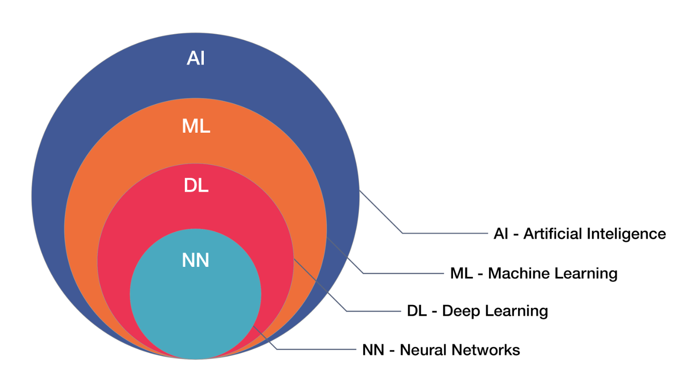
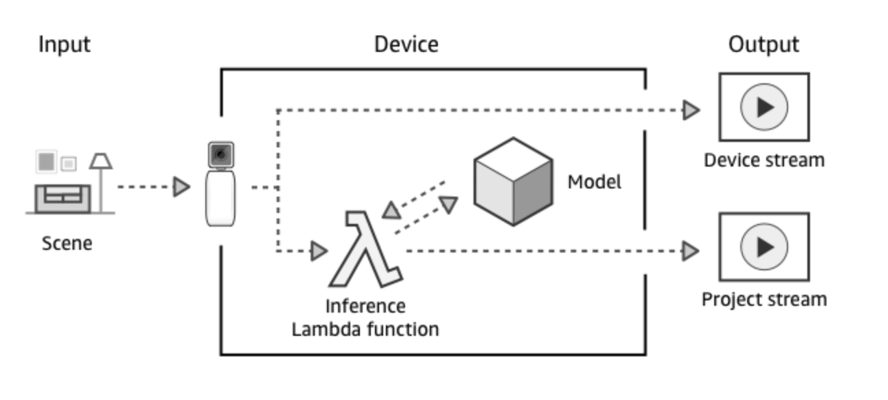

AWS DeepLens
AWS Overview of DeepLens
March 14th, 2018 - Delaware DevOps / Philly AWS User Group
Jason Poley Cloud Architect

AI & ML
Translate (preview)
Amazon Translate is a neural machine translation service that delivers fast, high-quality, and affordable language translation. Neural machine translation uses deep learning to deliver more accurate and more natural sounding translation than older statistical and rule-based translation algorithms. Amazon Translate enables translation at scale so that you can easily translate large volumes of text efficiently to handle tasks like localizing content for international users and facilitating real-time cross-lingual communication.
Transcribe (preview)
Amazon Transcribe is an automatic speech recognition (ASR) service that makes it easy for developers to add speech to text capability to their applications. Using the Amazon Transcribe API, you can analyze audio files stored in Amazon S3 and have the service return a text file of the transcribed speech.
Comprehend
Amazon Comprehend is a natural language processing (NLP) service that uses machine learning to find insights and relationships in text. Amazon Comprehend identifies the language of the text; extracts key phrases, places, people, brands, or events; understands how positive or negative the text is; and automatically organizes a collection of text files by topic.
Rekognition Video
Amazon Rekognition Video is a deep learning powered video analysis service that tracks people, detects activities, and recognizes objects, celebrities, and inappropriate content. Amazon Rekognition Video can detect and recognize faces in live streams. Rekognition Video analyzes existing video stored in Amazon S3 and returns specific labels of activities, people and faces, and objects with time stamps so you can easily locate the scene. It can also perform facial recognition on live video from Amazon Kinesis Video Steams. For people and faces, it also returns the bounding box, which is the specific location of the person or face in the frame
SageMaker
Amazon SageMaker is a fully-managed service that enables developers and data scientists to quickly and easily build, train, and deploy machine learning models at any scale. Amazon SageMaker removes all the barriers that typically slow down developers who want to use machine learning.
 SageMaker Blog Post
SageMaker Blog Post
AI / ML overview
Neural Networks

CNN example

CNN Overview

DeepLens
AWS DeepLens is a deep learning enabled wireless video camera specifically designed to help developers of all skill levels grow their machine learning skills through hands-on computer vision tutorials, example code, and pre-built models. DeepLens includes an HD video camera with on-board compute optimized for deep learning, which is fully programmable using AWS Lambda. Developers are free to focus on their machine learning skills, while DeepLens automatically optimizes and deploys models to the device and connects to the cloud for more advanced capabilities. DeepLens integrates with Amazon SageMaker giving developers an end-to-end solution to learn, develop, and test machine learning applications both in the cloud and at the edge, for the very first time.
DeepLens HW specs

DeepLens sequence
How to get a DeepLens
attended 2017 re:invent DeepLens Workshoporder on Amazon.com Ships end of June 2018